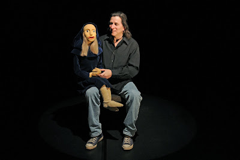

Rehearsng Vent for Theatre
9/3/2010
{kind=link}

By Buddy Big Mountain
Over the past eight years I have had the good fortune to be a part of a production. The producer uses ventriloquists to give ones inner thoughts, a voice. This past June I went to Braunschweig Germany to perform a text called "The Inner Voice - I Am Big" at the Festival Theaterformen.
This particular text, when performed, was about 50 to 60 minutes long. The actors were myself and the figure that was built by the producer. The text is expected to be delivered word for word and in the way the writer meant it to be. I sit in a chair in the spot lights, the middle of the stage with the figure sitting on my lap.
I had to memorize the text first. I broke it up in small sections to make it a little easier for myself and then I practiced it by the page. When I started rehearsing the text I did it without any inflection or emotion. Why? My first time working with this project I had memorized the text from beginning to end. Not only did I rehearse it with a voice, I blocked it out and memorized it as if it were one of my own routines. When I made it to rehearsals and I was asked to go through the text I did it almost flawlessly. I was very proud of myself and the director said, "That is very good Buddy, but that is not the way I want you to do it."
When we came up with the voice I was to use, and the way I was directed to say it, it was like I had never rehearsed at all. I was glad we had enough time before the performance. When I do my own dialogues I can hear my character saying what I am writing as I am writing it. My guys even change it as we go along.
Working with a character you don't know and performing words that are not your own... is challenging. I did a text called "The Inner Voice - Dead Air" about dealing with death. It had made some of the audience members very uneasy. I was told that we were going to do this text as a comedy. I was thinking that now I would have to memorize all the changes made to the text and I hope I could do that in the amount of time we had before the presentation. All we did was change the way things were said, we didn't change any words at all. That is theatre.
Over the past eight years I have had the good fortune to be a part of a production. The producer uses ventriloquists to give ones inner thoughts, a voice. This past June I went to Braunschweig Germany to perform a text called "The Inner Voice - I Am Big" at the Festival Theaterformen.
This particular text, when performed, was about 50 to 60 minutes long. The actors were myself and the figure that was built by the producer. The text is expected to be delivered word for word and in the way the writer meant it to be. I sit in a chair in the spot lights, the middle of the stage with the figure sitting on my lap.
I had to memorize the text first. I broke it up in small sections to make it a little easier for myself and then I practiced it by the page. When I started rehearsing the text I did it without any inflection or emotion. Why? My first time working with this project I had memorized the text from beginning to end. Not only did I rehearse it with a voice, I blocked it out and memorized it as if it were one of my own routines. When I made it to rehearsals and I was asked to go through the text I did it almost flawlessly. I was very proud of myself and the director said, "That is very good Buddy, but that is not the way I want you to do it."
When we came up with the voice I was to use, and the way I was directed to say it, it was like I had never rehearsed at all. I was glad we had enough time before the performance. When I do my own dialogues I can hear my character saying what I am writing as I am writing it. My guys even change it as we go along.
Working with a character you don't know and performing words that are not your own... is challenging. I did a text called "The Inner Voice - Dead Air" about dealing with death. It had made some of the audience members very uneasy. I was told that we were going to do this text as a comedy. I was thinking that now I would have to memorize all the changes made to the text and I hope I could do that in the amount of time we had before the presentation. All we did was change the way things were said, we didn't change any words at all. That is theatre.